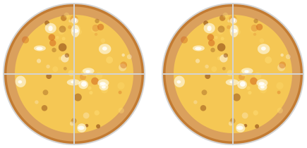
👈 This book is optimized for PDF output. Download the PDF from the sidebar or menu.
7 Pizza Math 
7.1 How much pizza do you eat?
I know for a fact that, besides being a chocolate  and a gelato
and a gelato  monster, you also love pizza . Margherita, of course.
monster, you also love pizza . Margherita, of course.
Some times you eat \(2\) pizzas in a single day.
Other times, you eat just \(1\) pizza.
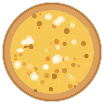
But some times you are not that hungry and you just eat a fraction of the pizza.
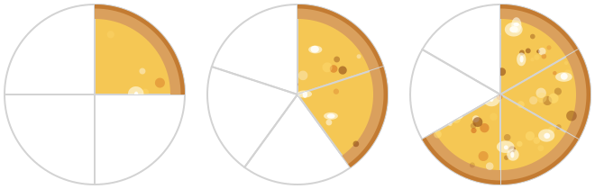
So far we have operated in the realm of the integers, which represent whole quantities. The very word integer means whole or complete.
In this chapter, we will learn about another set of numbers, called the rational numbers \(\color{purple}{\mathbb{Q}}\), which can be used to represent parts or fractions of whole quantities. We will learn that just as the natural numbers \({\color{red}{\mathbb{N}}}\) are included in the integers \({\color{blue}{\mathbb{Z}}}\), the integers are included in the rational numbers:
\[ {\color{red}{\mathbb{N}}} \subset {\color{blue}{\mathbb{Z}}} \subset {\color{purple}{\mathbb{Q}}} \]
7.2 How do you name these new numbers?
Naming fractions is easy. First, you need the number of parts into which the whole unit is divided. That number is called the denominator. Then, you need to know how many of those parts are included; that number is called the numerator.
=
Now, let’s see how to represent these numbers. For example, the following quantity represents the fraction \(\frac{1}{3}\), which is read as “one third.” This means that the whole pizza is divided into \(3\) parts, and you eat \(1\) of those parts.
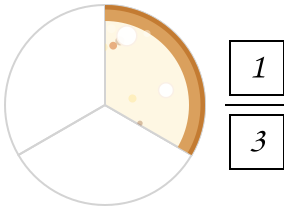
Exercises
Write down the following fractions:
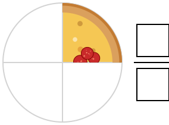
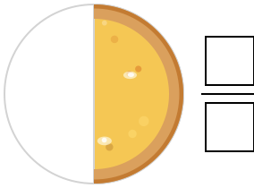
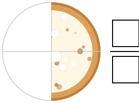
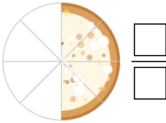
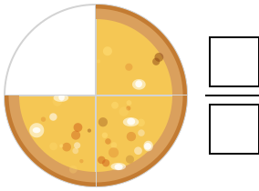
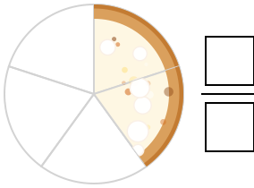
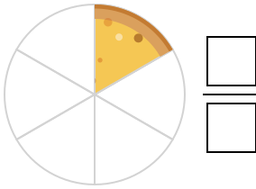
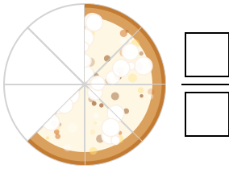
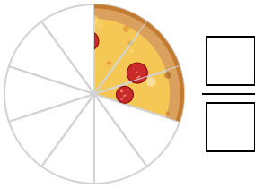
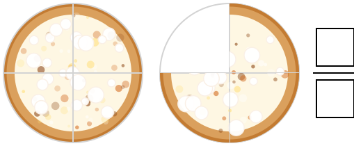
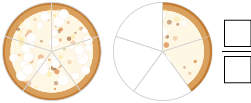
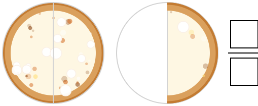